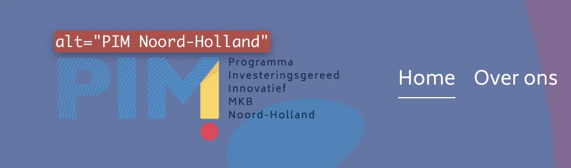
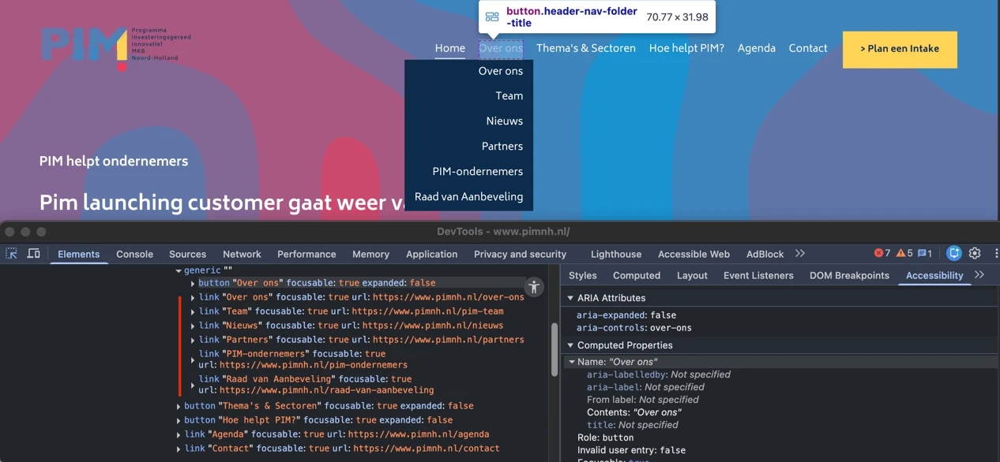
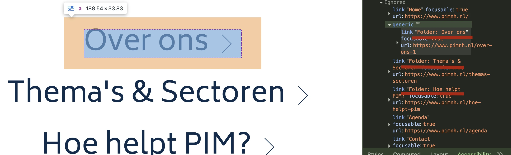
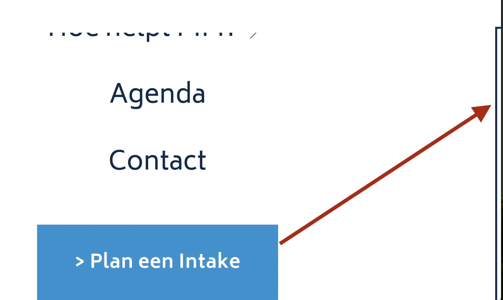
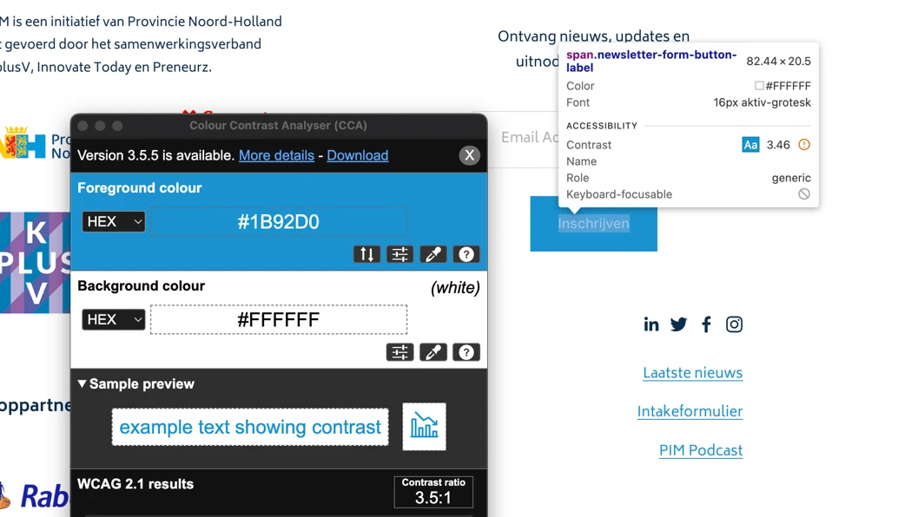
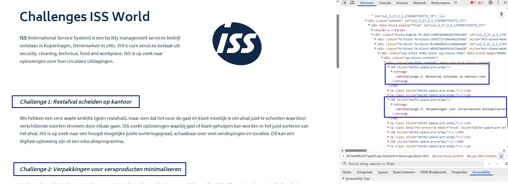
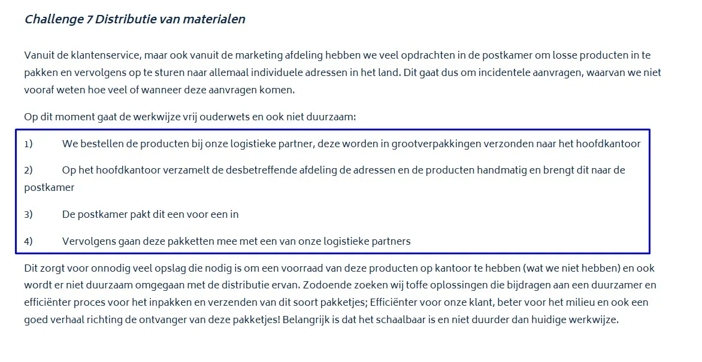
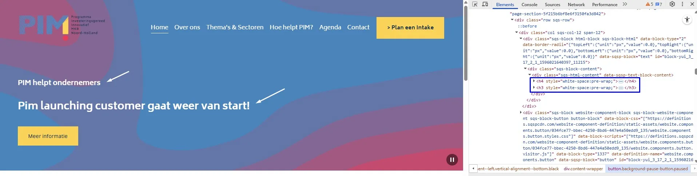
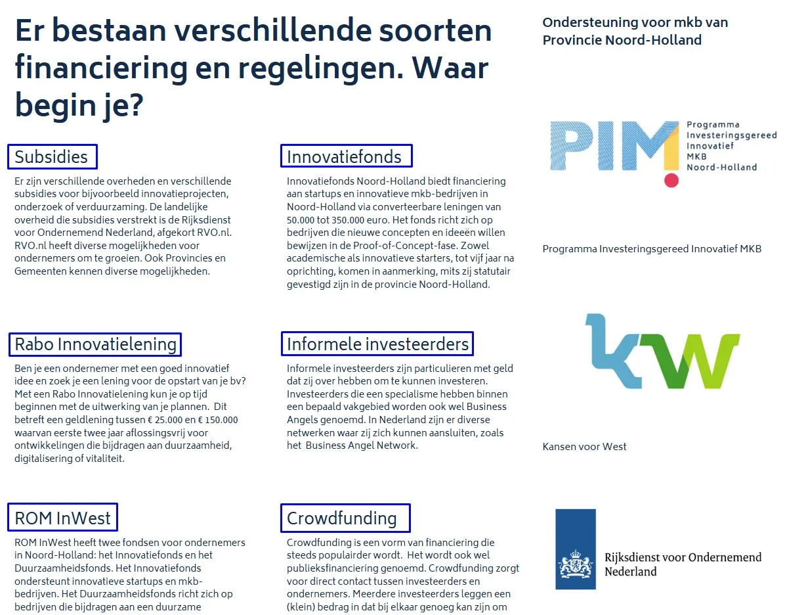
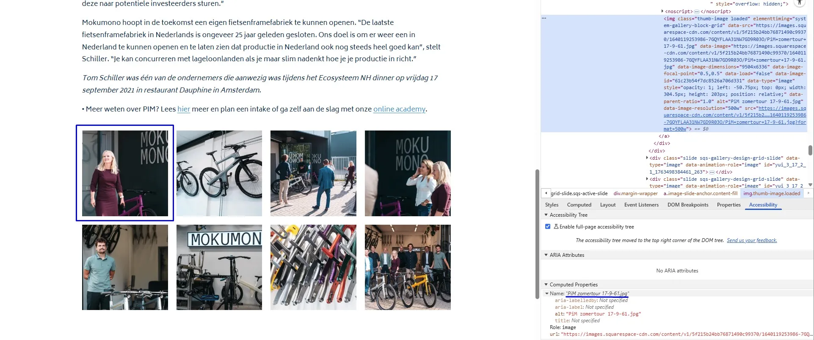

Audit digitale toegankelijkheid van website pimnh.nl
Samenvatting
Wij hebben de website pimnh.nl onderzocht tussen 25 en 29 november 2025. Op dit moment zijn 34 van de 55 succescriteria als voldoende beoordeeld. In dit rapport lees je wat er bij de overige 21 nog fout gaat, en hoe je dat kunt verbeteren.
#1 - De automatisch gegenereerde ondertiteling heeft fouten
Impact: MediumType: ContentWCAG: 1.2.2EN: 9.1.2.2
Op deze pagina staat een video met een voice-over. Hoewel er ondertitels aanwezig zijn, zijn deze automatisch gegenereerd en daardoor onnauwkeurig.
Video’s waarin gesproken wordt, moeten altijd goede ondertiteling krijgen. Zo krijgen bezoekers die de video niet (goed) kunnen horen ook alle informatie. Deze ondertiteling moet exact hetzelfde zijn als wat wordt gezegd. De automatisch gegenereerde ondertiteling voldoet hier niet aan, omdat er punctuatie ontbreekt en er fouten in kunnen zitten.
#2 - Er is maar één manier om een webpagina te vinden
Impact: GrootType: TechniekWCAG: 2.4.5EN: 9.2.4.5
Er is geen tweede manier om de pagina’s van deze website te vinden.
Alle pagina’s die op de website staan moeten op meerdere manieren gevonden kunnen worden.
Oplossing:
Zorg dat de webpagina’s op meerdere manieren bereikbaar zijn. Dat mag via een zoekveld, een sitemap of een inhoudsopgave.
De hoofdtaal van de pagina’s is Nederlands, maar het attribuut lang is onjuist ingesteld op "en-US".
Je moet de primaire taal van de pagina aangeven met de juiste taalcode via het lang-attribuut op het html-element, in dit geval lang="nl". Schermlezers gebruiken deze code om de juiste uitspraakregels toe te passen. Staat hier een verkeerde code, dan wordt de inhoud van de pagina dus met onjuiste uitspraakregels voorgelezen. De voorgelezen tekst is dan erg lastig te begrijpen.
Oplossing:
Stel de taalcode correct in voor elke pagina door lang="nl" te gebruiken.
Bij het oplossen van dit issue, let op de volgende:
Wanneer het lang-attribuut van de pagina is ingesteld op “nl”, moet alle inhoud op de pagina in het Nederlands zijn. Dit betekent dat alle tekst in een andere taal moet voorzien zijn van het juiste lang-attribuut, zodat hulpsoftware de juiste uitspraakregels kan toepassen.
Op de website zien we op dit moment meerdere Engelse teksten, zoals labels van invoervelden zoals “First Name”, “Last Name” en “Upload Pitch Deck (concept)”, maar ook foutmeldingen in formulieren en toegankelijke namen via het attribuut aria-label, zoals “Pause Background” en “Play Background” op de homepagina https://www.pimnh.nl/, enzovoort. Je moet deze teksten vertalen in het Nederlands of bij elke Engelse tekst een lokaal taalswitch toevoegen. De eerste optie is beter.
#4 - Tekstalternatief van het logo is niet voldoende
Impact: GrootType: ContentWCAG: 1.1.1EN: 9.1.1.1

Het logo bovenaan de website toont de volledige tekst "PIM Programma investeringsgereed innovatief MKB Noord-Holland", maar de alt-tekst is alleen "PIM Noord-Holland".
In het tekstalternatief staat dus niet alle tekst die in het logo te zien is. Dit moet wel. Zo weten bezoekers die het plaatje niet kunnen zien, ook precies wat er staat.
Een soortgelijk probleem wordt waargenomen bij het logo in de cookiebanner. Het logo toont de volledige tekst "PIM Programma investeringsgereed innovatief MKB Noord-Holland", maar de alt-tekst is alleen “logo”.
Oplossing:
Verander de alt-tekst zodat de volledige tekst van het logo erin staat: “PIM Programma investeringsgereed innovatief MKB Noord-Holland”.
#5 - Content die verschijnt bij hover moet makkelijk gesloten kunnen worden
Wanneer met de muis over de knoppen “Over ons”, “Thema's & Sectoren” en “Hoe helpt PIM?“ in de header wordt bewogen, verschijnt extra inhoud die overlapt met de bestaande inhoud van de pagina.
Oplossing:
De bezoeker moet deze content makkelijk kunnen sluiten zonder de muis of de toetsenbordfocus te verplaatsen. Bijvoorbeeld door de Escape-toets in te drukken. Zo kan de bezoeker snel de extra informatie verbergen en doorgaan met de belangrijkste onderdelen van de pagina.
#6 - Submenulinks zijn in de code niet gegroepeerd
Impact: GrootType: TechniekWCAG: 1.3.1EN: 9.1.3.1

In de header van de website openen de knoppen “Over ons”, “Thema's & Sectoren” en “Hoe helpt PIM?“ submenu’s met links.
Deze links worden visueel als groep weergegeven, maar deze groepering is niet aanwezig in de HTML-structuur. Als het voor een ziende bezoeker duidelijk is dat een groep links of paginering bij elkaar hoort, dan moet die structuur ook in de HTML-code aanwezig zijn.
Oplossing:
Neem de elementen bijvoorbeeld op in een ul-element.
#7 - De namen van links zijn onduidelijk
Impact: GrootType: TechniekWCAG: 2.4.6EN: 9.2.4.6

Wanneer de website op een klein scherm wordt bekeken, opent de knop met twee horizontale lijnen een navigatiemenu. In dit menu staan links, zoals “Over ons”, die submenu’s openen. De toegankelijke namen van deze links die door een schermlezer worden voorgelezen bevatten een woord “Folder”, bijvoorbeeld “Folder: Over ons”.
Een blinde bezoeker weet daardoor niet wat deze links precies doet.
Oplossing:
De bedoeling is goed: je wil aangeven dat hier een submenu aanwezig is. Het woordje “Folder” op deze plek maakt het echter niet duidelijker.
Dit los je door het span-element met dit woord te verplaatsen naar de laatste positie binnen de link en de tekst te veranderen in “ Open submenu”. Let op de spatie voor “Open”.
<a href="/over-ons-1">
<span class="header-nav-folder-title-text">Over ons</span>
<span class="visually-hidden"> open sublmenu</span>
</a>
#8 - Onzichtbaar element krijgt toetsenbordfocus
Impact: GrootType: TechniekWCAG: 2.4.3EN: 9.2.4.3

Wanneer de website op een klein scherm wordt bekeken, opent de knop met twee horizontale lijnen een navigatiemenu. In dit menu komt de toetsenbordfocus op onzichtbare elementen terecht na de link “Plan een Intake”. Deze elementen zouden geen focus moeten krijgen en verstoren de logische volgorde van de focus. Dit is een probleem voor bezoekers die met de Tab-toets navigeren.
Oplossing:
Zorg dat alleen elementen die zichtbaar en interactief zijn, toetsenbordfocus kunnen krijgen en dat de focusvolgorde logisch is.
#9 - Kleurcontrast van tekst is te laag
Impact: GrootType: TechniekWCAG: 1.4.3EN: 9.1.4.3

Op de pagina’s van de website wordt de combinatie van blauw (#1B92D0) en wit gebruikt. De contrastratio tussen deze kleuren is 3,5:1, wat lager is dan de vereiste minimumwaarde van 4,5:1 voor standaardtekst. Hieronder staan enkele voorbeelden, al is de lijst niet volledig.
In de footer heeft de knop onder het invoerveld de witte tekst “Inschrijven” op een blauwe achtergrond.
In de footer staan links zoals “Laatste nieuws” met blauwe tekst op een witte achtergrond.
In de cookiebanner staat de knop met de witte tekst “Alles toestaan” op een blauwe achtergrond.
Op pagina https://www.pimnh.nl/amsterdamumc zie de link “Arena” onderaan de pagina “Meer achtergrondinformatie over challenge 1”. Dit komt ook voor op andere pagina’s.
Oplossing:
Deze tekst is kleiner dan 24px en niet vetgedrukt, daarom moet het contrast minimaal 4,5:1 zijn. Op deze pagina staat een instructie die uitlegt hoe je kleurcontrast kunt testen: https://properaccess.nl/hoe-test-ik-kleurcontrast/.
#10 - Informatiestructuur in de cookiebanner komt niet overeen met HTML
In het dialoogvenster voor cookievoorkeuren dat wordt geopend via de knop “Details tonen” op de cookiebanner, zijn tabbladen aanwezig met de labels “Toestemming”, “Details” en “Over”. Op het tabblad ‘Over’ staan zes alinea’s tekst. Al deze alinea’s zijn echter geplaatst binnen één enkel div-element, en regeleinden zijn toegevoegd met br-elementen in plaats van correcte paragraafmarkering.
Oplossing:
Plaats elke alinea in een eigen p-element. Het aantal alinea’s dat je visueel ziet, moet dus gelijk zijn aan het aantal p-elementen in de code.
In het dialoogvenster voor cookievoorkeuren dat wordt geopend via de knop “Details tonen” op de cookie banner, staan in het tabblad “Details” teksten die functioneren als koppen, maar waarvoor de h-elementen ontbreken. In plaats daarvan is het strong-element gebruikt om ze eruit te laten zien als koppen. Zie bijvoorbeeld de teksten in de sectie “Noodzakelijk” → “Calendly (4)”: “calendly_session” en “ab”, “mf”. Dit komt ook voor in andere secties.
Het strong-element is niet bedoeld om koppen mee te markeren. Je moet dat altijd doen met een kop-element, zoals h2. Koppen gebruik je om een tekst te structureren. Alleen als je ze als kop markeert met een kop-element, begrijpt hulpsoftware die betekenis.
Oplossing:
Verwijder het strong-element en gebruik de juiste kop-elementen om deze koppen te markeren, zoals h2 of h3. Dit element wordt vaak toegevoegd met een knop “B” in een tekstbewerker.
#11 - Toegankelijke namen zijn in het Engels geschreven
In het dialoogvenster voor cookievoorkeuren dat wordt geopend via de knop “Details tonen” op de cookie banner, heeft de link met het logo “Cookiebot by Usercentrics” het aria-label-attribuut met Engelse tekst: “Cookiebot - opens in a new window".
Dit label wordt voorgelezen door schermlezers, volgens de uitspraakregels van de taal van de dialoogvenster (in dit geval Nederlands).
Oplossing:
Vertaal de tekst van de aria-label-attribut naar het Nederlands, zodat ze correct worden uitgesproken door schermlezers. Of je geeft in de code aan dat er een taalwisseling is, door lang="en" toe te voegen aan het element dat de aria-label-attribuut bevat, of aan een overkoepelend element. Dit zorgt ervoor dat alleen dit stukje tekst in het Engels wordt voorgelezen.
#12 - De toegankelijke naam van de link komt niet overeen met de zichtbare tekst op het logo
In de cookiebanner staat de link met het logo: "Cookiebot by Usercentrics". De toegankelijke naam van de link is "Usercentrics Cookiebot - opens in a new window".
Dit kan problemen geven voor bezoekers die stembediening gebruiken. Zij spreken een commando uit door de zichtbare tekst voor te lezen. Als de zichtbare tekst verschilt van de toegankelijke naam die in de code is opgegeven, werkt het commando niet.
Hetzelfde probleem wordt waargenomen in het dialoogvenster voor cookievoorkeuren dat wordt geopend via de knop “Details tonen” op de cookie banner.
Oplossing:
Zorg dat de toegankelijke naam overeenkomt met de zichtbare tekst van de link.
Onderaan alle pagina’s staat een invoerveld. Bij onjuiste invoer verschijnen de foutmeldingen “Email Address is required.” en “Email addresses should follow the format user@domain.com.” Deze Engelse tekst mist een lokaal taal-attribuut.
Onderaan alle pagina’s staat een invoerveld. Bij onjuiste invoer verschijnen de foutmeldingen “Email Address is required.” en “Email addresses should follow the format user@domain.com.” Deze foutmelding krijgt geen focus en wordt niet aangekondigd door de schermlezer.
Als de foutmelding geen toetsenbordfocus krijgt op het moment dat deze verschijnt, krijgen mensen die blind zijn geen melding van hun schermlezer.
Oplossing:
Voeg aria-live="polite" aan de melding toe. Dan wordt de melding automatisch voorgelezen zodra deze verschijnt.
#15 - Foutmelding is niet gekoppeld aan invoerveld
Onderaan alle pagina’s staat een invoerveld. Bij onjuiste invoer verschijnen de foutmeldingen “Email Address is required.” en “Email addresses should follow the format user@domain.com.”
De relatie tussen de foutmeldingen en invoervelden is niet vastgelegd in de code. Daardoor kan hulpsoftware dit niet op tijd doorgeven aan de bezoeker.
Oplossing:
Je lost dit op door bij het <input>-element een aria-describedby-attribuut te gebruiken dat verwijst naar het id van de foutmelding.
Onderaan alle pagina’s staat een invoerveld. Bij onjuiste invoer verschijnen de foutmeldingen “Email Address is required.” en “Email addresses should follow the format user@domain.com.”
De foutmelding wordt weergegeven in rode tekst (#f23d3d) op een lichtrode achtergrond (#fed9db). De contrastratio hiervan is 2,9:1.
Foutmeldingen moeten, net als andere teksten, voldoen aan de minimale contrasteisen.
Oplossing:
Zorg dat het contrast tussen de kleur van de foutmelding en de achtergrond minimaal 4,5:1 is.
#17 - Informatieve element is verborgen voor hulpsoftware
Onderaan alle pagina’s staat het invoerveld voor het e-mailadres. Dit invoerveld heeft geen toegankelijke naam.
Dit komt doordat het label-element is verborgen met CSS display:none.
De zichtbare tekst van het invoerveld (de plaatshoudertekst) is "Email Address", maar deze tekst is niet opgenomen in de toegankelijke naam. Daardoor wordt ook niet voldaan aan succescriterium 2.5.3. Als de toegankelijke naam van een element niet hetzelfde is als de zichtbare tekst (in dit geval de plaatshoudertekst), is het voor bezoekers die gebruikmaken van spraaksoftware niet mogelijk om het element te bedienen.
Oplossing:
De CSS-code display:none zorgt ervoor dat inhoud wordt verborgen voor schermlezers. Gebruik dit daarom niet bij informatieve elementen.
#18 - De kleur van de rand van het invoerveld heeft niet genoeg contrast
Onderaan alle pagina’s is onder de tekst "Ontvang nieuws, updates en uitnodigingen van PIM." een invoerveld aanwezig. De contrastratio tussen de grijze rand (#E0E0E0) en de witte achtergrond van de pagina is 1,3:1.
Een soortgelijk probleem wordt waargenomen in de formulieren op pagina’s https://www.pimnh.nl/contact en https://www.pimnh.nl/academy. De contrastratio tussen de grijze rand van het invoerveld (#A9A9A9) en de witte achtergrond van de pagina is 2,4:1.
Oplossing:
De randen van interactieve elementen zoals invoervelden moeten minimaal een contrast van 3,0:1 hebben met de achtergrond.
#19 - Het contrast van de placeholder-tekst is kleiner dan 4,5:1
Onderaan alle pagina’s is onder de tekst "Ontvang nieuws, updates en uitnodigingen van PIM." een invoerveld aanwezig. De grijze plaatshoudertekst (#B2B2B2) op de witte achtergrond heeft een contrastratio van 2,1:1.
Oplossing:
Zorg ervoor dat de placeholdertekst een contrast van minimaal 4,5:1 heeft ten opzichte van de achtergrond.
#20 - Alternatieve tekst van informatieve afbeelding is niet betekenisvol
Impact: MediumType: ContentWCAG: 1.1.1EN: 9.1.1.1
Onderaan alle pagina’s staan logo’s. Het logo met de tekst “Provincie Noord-Holland” heeft het alt-attribuut ingesteld op “Logo-provincie-noord-holland.png”. Het logo met de tekst “kplusv” gebruikt de alt-tekst “kplusv.png”.
Deze alternatieve teksten bevatten bestandsnamen met een bestandsextensie (".png"), wat geen betekenisvolle alternatieve tekst oplevert. Het gebruik van een bestandsnaam als alternatieve tekst is onvoldoende, omdat het geen zinvolle beschrijving biedt voor schermlezers.
Oplossing:
Werk de alt-tekst bij zodat deze de volledige tekst of naam bevat die in het logo staat, zoals: “Provincie Noord-Holland”, “kplusv”.
#21 - Logo is een link, maar bestemming is onbekend
Onderaan alle pagina’s staan logo’s. De logo’s met de teksten “Innovate today” en “Rabobank” hebben geen tekstalternatief.
Omdat deze logo’s ook links zijn, missen deze links een toegankelijke naam en is er geen beschrijvende tekst over de bestemming van de link. Hierdoor is het voor bezoekers die hulpsoftware gebruiken lastig om te bepalen naar welke pagina of inhoud de link leidt. Dit voldoet niet aan succescriteria 2.4.4 en 4.1.2.
Aangezien de toegankelijke namen van de links de zichtbare tekst in de logo’s niet bevatten, werkt de link niet goed als deze met spraakbediening wordt geactiveerd. Er wordt dan namelijk de tekst uitgesproken die in het logo te zien is. Als de toegankelijke naam hiervan afwijkt, herkent het systeem de link niet.
De logo’s met de teksten “Gemeente Amsterdam” en “Preneurz Amsterdam” hebben geen tekstalternatief (alt-attribuut is leeg).
Hetzelfde probleem wordt waargenomen op https://www.pimnh.nl/events/plc-samenwerken-met-corporates-2025. Daar staan logo’s onder de koppen “Partners van PIM LCP” en “Challenges 2025”.
Oplossing:
Pas een van deze opties toe om de link meer context te geven:
alt-tekst: als het logo een afbeelding is, kun je een beschrijvende alt-tekst toevoegen die de bestemming van de link beschrijft .
aria-label: Voeg een aria-label-attribuut toe aan het a-element met een beschrijving van de bestemming.
Zorg dat de tekst die in het logo zichtbaar is voorkomt in de toegankelijke naam, het liefst vooraan. Het is nog beter als de toegankelijke naam gelijk is aan de zichtbare tekst.
#22 - Kop is niet gemarkeerd als koptekst
Impact: MediumType: ContentWCAG: 1.3.1EN: 9.1.3.1
Onderaan de website is de volgende tekst niet opgemaakt als kop: "Ontvang nieuws, updates en uitnodigingen van PIM.".
Bezoekers die hulpsoftware gebruiken hebben niets aan een (tussen)kop die er wel uitziet als kop, maar niet als kop is gemarkeerd. Via de koppen op een pagina kunnen gebruikers van hulpsoftware de inhoud scannen of snel naar een bepaalde sectie springen. Maar dat kan alleen als de kop ook echt in de code staat. Als koppen alleen visueel als kop zijn vormgegeven (bijvoorbeeld vetgedrukt), ontstaat bovendien nog een ander probleem: de structuur van de informatie in de code wijkt dan af van de visuele structuur. Op deze pagina staat een instructie hoe je zelf koppen op een webpagina kunt testen: https://properaccess.nl/zo-controleer-je-de-koppenstructuur-van-je-website/.
Oplossing:
Dit voorkom je door koppen altijd te markeren met het juiste HTML-element, op het juiste kopniveau: h1, h2, h3, h4, h5 of h6. Meestal kun je het kopniveau kiezen via de content-editor in je CMS. De HTML-code voor de kop wordt dan automatisch toegepast.
#23 - Focus niet meer zichtbaar omdat cookiebanner bij inzoomen deel van pagina bedekt
Impact: MediumType: ТеchniekWCAG: 2.4.11
Wanneer een bezoeker de website opent met de cookiebanner in beeld en achterwaarts navigeert met Shift + Tab, verplaatst de toetsenbordfocus zich naar elementen die verborgen zijn achter de cookiebanner. Daardoor is niet zichtbaar waar de focus zich bevindt.
Oplossing:
Zorg ervoor dat de cookiebanner meeschaalt bij inzoomen, zodat de focus zichtbaar is.
Op deze pagina staan in de secties onder “Meer achtergrondinformatie over challenge 2” en “Meer achtergrondinformatie over challenge 3” lijsten met sublijsten. In de code zijn deze sublijsten echter onjuist direct binnen de hoofd ul-elementen geplaatst, in plaats van genest te zijn binnen de bijbehorende li-elementen. Dit zorgt voor een onjuiste lijststructuur, omdat een ul-element geen direct kind mag zijn van een ander ul-element, maar altijd binnen een li-element moet staan.
Oplossing:
Zorg dat de lijsten correct zijn opgebouwd door elke geneste ul binnen het juiste li-element te plaatsen waartoe deze behoort. Zo blijft de bedoelde hiërarchie behouden en kunnen hulpsoftware de lijsten correct interpreteren en aankondigen.
Dit is niet de bedoeling. In het title-element van elke pagina moet een unieke tekst staan die de inhoud van de pagina beschrijft, bij voorkeur gevolgd door de naam van de organisatie. Staat hier bij twee of meer pagina’s dezelfde tekst? Dan kan dit verwarrend zijn voor de bezoeker. De navigatie tussen pagina’s wordt dan ook lastiger.
Oplossing:
Verander de tekst in het title-element van, zodat deze op elke pagina uniek is en de inhoud van de pagina nauwkeurig beschrijft.
strong en em-element is gebruikt in koptekst
Impact: KleinType: ContentWCAG: 1.3.1EN: 9.1.3.1

Op deze pagina staan koppen met de tekst “Challenge 1: Restafval scheiden op kantoor”, “Challenge 2: Verpakkingen voor versproducten minimaliseren”, “Challenge 3: Zit/sta bureaus” en andere. In deze koppen worden het heading-element, het strong-element en het em-element gebruikt.
Het strong en em-element heeft een semantische waarde: het geeft een bepaalde betekenis aan de tekst die erin staat, namelijk dat de tekst extra nadruk moet krijgen. Om die reden mag je dit element niet gebruiken om alleen een visueel effect te bereiken (schuingedrukt).
Zie ook de pagina https://www.pimnh.nl/amsterdamumc daar staan kopjes als “Challenge 1: Op zoek naar een zak voor de biovergister”, “Challenge 2: Terugdringen van CO₂-uitstoot van reinigingsprocessen”, “Challenge 3: Op zoek naar een alternatief chirurgisch net (blue wrap)” en andere.
Oplossing:
Gebruik CSS om de tekst vetgedrukt te maken, en verwijder het strong en em-element.
#26 - Opsomming is niet opgebouwd met het HTML-element ul of ol
Impact: AdviesType: ContentWCAG: 1.3.1EN: 9.1.3.1

Op deze pagina staat onder de tekst "Op dit moment gaat de werkwijze vrij ouderwets en ook niet duurzaam:" een lijst met vier items, maar deze lijst is niet gemarkeerd als een lijst.
Dit is slechts een advies omdat uit de informatiestructuur en hiërarchie uit de tekst duidelijk is. Hiermee voldoe je aan de minimale eisen die WCAG stelt. Als de cijfers niet in de HTML aanwezig waren, zou de structuur niet duidelijk zijn voor een bezoeker met de schermlezer.
Een vergelijkbare situatie wordt waargenomen op pagina https://www.pimnh.nl/pims-oplossingen/raboinnovatielening onder “Deliverables”, “Opzet” en “Overig”. Daar staan lijsten die niet correct zijn opgemaakt.
Oplossing:
Let op deze lijsten. Gebruik liever een <ul> element om deze tekst als een lijst te markeren.
Op deze pagina staan koppen zoals “PIM helpt ondernemers”, “Pim launching customer gaat weer van start!”, “1.000 ondernemers” en andere. Voor deze koppen zijn het heading-element en het strong-element gebruikt.
Het strong-element heeft een semantische waarde. Het geeft een bepaalde betekenis aan de tekst die erin staat, namelijk dat de tekst extra nadruk moet krijgen. Om die reden mag je dit element niet gebruiken om alleen een visueel effect te bereiken (vetgedrukt).
Hetzelfde probleem wordt waargenomen op andere pagina’s.
Op pagina https://www.pimnh.nl/circulair gaat het om de koppen “Bedrijven met circulaire ambities?”, “Plan direct een vrijblijvende afspraak met PIM”, “PIM ondersteunt met o.a.” en andere. Dit komt ook voor op andere pagina’s.
Oplossing:
Gebruik CSS om de tekst vetgedrukt te maken, en verwijder het strong-element.
#27 - Er staan twee koppen van hetzelfde niveau direct onder elkaar
Impact: MediumType: ContentWCAG: 1.3.1EN: 9.1.3.1

Op deze pagina wordt een kop van niveau 4 direct gevolgd door een kop van een hoger niveau. Zie “PIM helpt ondernemers” en “Pim launching customer gaat weer van start!”.
Ook wordt een kop van niveau 2 direct gevolgd door een andere kop van hetzelfde niveau. Zie “Agenda” en “Thema’s van innovatief mkb”.
Als twee koppen van hetzelfde niveau direct onder elkaar staan zonder inhoud ertussen, dan is één van de koppen niet op de goede manier gebruikt. Direct onder het eerste h3-element mag een h4-element komen of andere content, maar niet nog een keer een h3-element of een h2-element.
Hetzelfde probleem wordt waargenomen op andere pagina’s.
Op pagina https://www.pimnh.nl/circulair gaat het om de koppen “Bedrijven met circulaire ambities?” en “Plan direct een vrijblijvende afspraak met PIM”.
Op pagina https://www.pimnh.nl/pim-ondernemers betreft het de koppen “Duurzaamheid & Energie | Circulaire Economie | Landbouw, Water & Voedsel | Gezondheid & Zorg | Veiligheid | Innovatief MKB” en “Duurzaamheid & Energie”.
Dit komt ook voor op andere pagina’s.
#28 - Het type content in het iframe is niet beschreven in het title-attribuut
Impact: MediumType: ContentWCAG: 2.4.6EN: 9.2.4.6
Op deze pagina hebben de iframes onder de kop “Wat zeggen ondernemers over PIM?” de volgende tekst in het title-attribuut: "Anastasia vertelt over PIM", “Simone vertelt over PIM” en “Tim vertelt over PIM”.
Iframes moeten een goede beschrijving hebben. Die zet je meestal in het title-attribuut van het iframe. Er moet in staan welk type inhoud het is (bijvoorbeeld een podcast of video), en waar het inhoudelijk over gaat. Deze beschrijving van de inhoud moet uniek en betekenisvol zijn. Door de beschrijving kunnen bezoekers met hulpsoftware beslissen of het de moeite waard is om de inhoud van het iframe te verkennen.
Hetzelfde probleem wordt waargenomen op andere pagina’s.
Op pagina https://www.pimnh.nl/circulair staan onder de kop “Wat zeggen ondernemers over PIM?” iframes met vergelijkbare title-attributen.
Op deze pagina worden video’s getoond onder de kop “Wat zeggen ondernemers over PIM?”. Deze video’s bevatten tekst en logo’s op verschillende momenten, bijvoorbeeld in de video “Anastasia vertelt over PIM” rond 0:01 en 0:52. Er is echter geen media-alternatief of audiobeschrijving beschikbaar. Deze video bevat visuele informatie (tekst en logo’s) die niet toegankelijk is voor blinde gebruikers.
Hetzelfde probleem wordt waargenomen bij de video onder de kop “Betere groeistrategie en financiering voor innovatief MKB”.
Bezoekers die blind of slechtziend zijn, missen hierdoor informatie.
Dit kan voor dit succescriterium (1.2.3) worden opgelost met een geschreven tekst (media-alternatief), maar om aan succescriterium 1.2.5 te voldoen, moet een audiobeschrijving worden toegevoegd die de visuele elementen in de video beschrijft, zoals namen, functies, logo’s en teksten.
#30 - Toetsenbordfocus is niet zichtbaar
Impact: GrootType: TechniekWCAG: 2.4.7EN: 9.2.4.7
Op deze pagina is de toetsenbordfocus niet zichtbaar op de interactieve elementen in de videospeler onder de kop “Betere groeistrategie en financiering voor innovatief MKB”, zoals de knop voor dempen of dempen opheffen, de knop voor volledig scherm en de voortgangsbalk voor afspelen.
De toetsenbordfocus moet altijd zichtbaar zijn op interactieve elementen zoals links, knoppen en invoervelden die met het toetsenbord focus kunnen krijgen. Bezoekers die met het toetsenbord navigeren moeten goed kunnen zien op welke plek van de pagina ze zijn. Anders weten ze niet op welk moment ze op Enter moeten drukken om een knop of link te bedienen.
Op deze pagina toont de carrousel onder de kop “Oplossingen van PIM” afbeeldingen en links, en bevat deze knoppen met pijlen om tussen de items te navigeren. De pictogrammen van deze pijlen hebben onvoldoende kleurcontrast. Het grijze pictogram (#A0AAB6) op de witte achtergrond heeft een contrastratio van 2,4:1, wat lager is dan de vereiste 3,0:1 voor grafische elementen die informatie overbrengen.
Ditzelfde probleem doet zich ook voor onder de kop “Thema’s van innovatief mkb”.
Hetzelfde probleem wordt waargenomen op andere pagina’s:
Het kleurcontrast van informatieve iconen moet minimaal 3,0:1 zijn.
Zorg dat deze informatieve elementen voldoende contrast hebben. Op deze pagina staat een instructie die uitlegt hoe je kleurcontrast kunt testen: https://properaccess.nl/hoe-test-ik-kleurcontrast/.
#32 - Contrast tussen focusindicator en achtergrond is te laag
Op deze pagina toont de carrousel onder de kop “Oplossingen van PIM” afbeeldingen en links en bevat knoppen met pijlen om tussen de items te navigeren. Wanneer een van de knoppen toetsenbordfocus krijgt, is dit zichtbaar door een grijze rand (#A1ABB7). De contrastratio tussen deze toetsenbordfocusrand en de witte achtergrond is 2,3:1.
Hetzelfde probleem wordt waargenomen onder de kop “Thema’s van innovatief mkb”.
Momenteel is het voor mensen met een visuele beperking of kleurenblindheid lastig of zelfs onmogelijk om de focus te zien.
Op deze pagina staat een kop met de tekst “PIM ondersteunt innovatieve mkb-ondernemers bij het ophalen van financiering.”. In deze kop worden het heading-element en het em-element gebruikt.
Het em-element heeft een semantische waarde: het geeft een bepaalde betekenis aan de tekst die erin staat, namelijk dat de tekst extra nadruk moet krijgen. Om die reden mag je dit element niet gebruiken om alleen een visueel effect te bereiken (schuingedrukt).
Oplossing:
Gebruik CSS om de tekst vetgedrukt te maken, en verwijder het em-element.
#33 - Kop is niet gemarkeerd als koptekst
Impact: MediumType: ContentWCAG: 1.3.1EN: 9.1.3.1

Op deze pagina zijn de volgende teksten niet opgemaakt als koppen: "Subsidies", "Innovatiefonds", "Rabo Innovatielening" en andere.
Bezoekers die hulpsoftware gebruiken hebben niets aan een (tussen)kop die er wel uitziet als kop, maar niet als kop is gemarkeerd. Via de koppen op een pagina kunnen gebruikers van hulpsoftware de inhoud scannen of snel naar een bepaalde sectie springen. Maar dat kan alleen als de kop ook echt in de code staat. Als koppen alleen visueel als kop zijn vormgegeven (bijvoorbeeld vetgedrukt), ontstaat bovendien nog een ander probleem: de structuur van de informatie in de code wijkt dan af van de visuele structuur. Op deze pagina staat een instructie hoe je zelf koppen op een webpagina kunt testen: https://properaccess.nl/zo-controleer-je-de-koppenstructuur-van-je-website/.
Oplossing:
Dit voorkom je door koppen altijd te markeren met het juiste HTML-element, op het juiste kopniveau: h1, h2, h3, h4, h5 of h6. Meestal kun je het kopniveau kiezen via de content-editor in je CMS. De HTML-code voor de kop wordt dan automatisch toegepast.
Op deze pagina hebben de logo’s onder de kop “Samenwerkingspartners” geen tekstalternatieven.
Als het alt-attribuut van een afbeelding leeg is (alt=""), negeren schermlezers de afbeelding. Door de alt-tekst niet in te vullen, zeg je eigenlijk: deze afbeelding is puur decoratief, geeft geen informatie. Er wordt dan dus niets voorgelezen. Daarom moet je informatieve afbeeldingen zoals een logo altijd een alt-tekst geven.
Op deze pagina wordt onder de kop "Challenges 2025" het em-element onjuist gebruikt voor opmaakdoeleinden in de tekst die begint met: “Damen Shipyards Group is al meer dan vijfennegentig jaar …”.
Het em-element heeft een semantische waarde: het geeft een bepaalde betekenis aan de tekst die erin staat. Dit element geeft aan dat de tekst extra nadruk moet krijgen. Om die reden mag dit element niet gebruikt worden om alleen een visueel effect te bereiken (cursieve tekst).
Verwijder de onnodige em-elementen en gebruik CSS om de tekst schuingedrukt te maken.
#35 - Onzichtbaar element krijgt toetsenbordfocus
Impact: GrootType: TechniekWCAG: 2.4.3EN: 9.2.4.3
Op deze pagina komt de toetsenbordfocus terecht op een onzichtbaar interactief element na de link “Back to All Events”.
De toetsenbordfocus mag niet terechtkomen op onzichtbare interactieve elementen (links, knoppen, formuliervelden). Als dat wel gebeurt, kan een bezoeker ze onbedoeld activeren.
Oplossing:
Zorg dat alleen elementen die zichtbaar zijn toetsenbordfocus kunnen krijgen en dat de focusvolgorde logisch is.
#36 - Link heeft geen tekst, waardoor linkdoel onbekend is
Op deze pagina staat onder "Handige data voor in je agenda" een lijst. Onder deze lijst staat een link die geen inhoud bevat en daardoor geen toegankelijke naam heeft. Hierdoor heeft de link geen herkenbaar doel.
Een blinde bezoeker weet daardoor niet waar de link naartoe zal leiden.
Op deze pagina, onder de kop "Met PIM haalt innovatief mkb in Noord-Holland 200 miljoen aan financiering op", wordt het strong-element onjuist gebruikt voor opmaakdoeleinden. De volledige alinea is in een strong-element geplaatst om de tekst vet weer te geven.
Het strong-element heeft een semantische waarde: het geeft een bepaalde betekenis aan de tekst die erin staat. Dit element geeft aan dat de tekst extra nadruk moet krijgen. Om die reden mag dit element niet gebruikt worden om alleen een visueel effect te bereiken (vetgedrukte tekst).
Verwijder de onnodige strong-elementen en gebruik CSS om de tekst vet te maken.
strong-element in plaats van kop-element
Impact: MediumType: ContentWCAG: 1.3.1EN: 9.1.3.1
Op deze pagina zijn de volgende teksten onjuist opgemaakt met het strong-element in plaats van met correcte heading-elementen: "Vanaf de start ruim 800 ondernemers begeleid", "Succesverhaal" en "PIM biedt MKB toegang tot kapitaalmarkt".
Het strong-element is niet bedoeld om koppen mee te markeren. Je moet dat altijd doen met een kop-element, zoals h2. Koppen gebruik je om een tekst te structureren. Alleen als je ze als kop markeert met een kop-element, begrijpt hulpsoftware die betekenis. Het strong-element gebruik je wel als je nadruk wilt geven aan enkele woorden of een zinsdeel.
Hetzelfde probleem wordt waargenomen
op de pagina https://www.pimnh.nl/pimlaunchingcustomerplatform. Daar staan teksten zoals “Deel 1: Masterclass Corporate Sales”, “Deel 2: Matchmaking day: Speeddaten”, “Take aways” en andere, die onjuist zijn opgemaakt met het strong-element in plaats van met heading-elementen.
Wanneer deze pagina wordt bekeken met een schermresolutie van 1280 bij 1024 pixels en ingezoomd tot 400%, overlappen de volgende teksten elkaar: “Provincie Noord-Holland geeft subsidie aan circulaire samenwerkingsprojecten” en “Mkb-subsidies beschikbaar voor innovaties”.
Oplossing:
Zorg dat alles nog werkt en leesbaar is als je inzoomt tot 400% op een scherm van 1280 bij 1024 pixels.
#38 - Alternatieve teksten van afbeeldingen zijn niet betekenisvol
Impact: MediumType: ContentWCAG: 1.1.1EN: 9.1.1.1

Op deze pagina staan onder de sectie "Impact-gedreven investeerder" afbeeldingen met alternatieve teksten die onvoldoende beschrijven wat er op de afbeeldingen te zien is, zoals “PiM zomertour 17-9-61.jpg”, “PiM zomertour 17-9-63.jpg”, “PiM zomertour 17-9-75.jpg” en andere.
Deze alternatieve teksten bevatten bestandsnamen met de extensie “.jpg” en geven geen beschrijving van de visuele inhoud of betekenis van de afbeeldingen. Afbeeldingen die informatie overbrengen moeten een betekenisvolle alternatieve tekst hebben die de belangrijke informatie in de afbeelding beschrijft.
Oplossing:
Voeg een beschrijvende alternatieve tekst toe aan het alt-attribuut.
Op deze pagina staan in het formulier invoervelden met labels waarin de tekst “(required)” voorkomt. De lichtblauwe tekst (#C9DAEB) heeft onvoldoende kleurcontrast ten opzichte van de achtergrond. Aangezien de achtergrond van het formulier een animatie is, kan de achtergrondkleur variëren. Tegen een blauwe achtergrond (#4B83BB) is de contrastratio bijvoorbeeld 2,8:1.
Oplossing:
Deze tekst is kleiner dan 24px en niet vetgedrukt, daarom moet het contrast minimaal 4,5:1 zijn. Op deze pagina staat een instructie die uitlegt hoe je kleurcontrast kunt testen: https://properaccess.nl/hoe-test-ik-kleurcontrast/.
Op deze pagina staat een video met gesproken tekst, maar ondertitels ontbreken.
Ondertitels zijn essentieel voor bezoekers die doof of slechthorend zijn om toegang te krijgen tot alle inhoud van de video.
Oplossing:
Voeg ondertiteling toe aan de video.
Over dit onderzoek
Leeswijzer
Onze rapporten zijn anders. Bij het bespreken van de gevonden problemen volgen wij niet de structuur van de norm, maar die van jouw website of app. Hierdoor kun je gewoon per pagina of scherm aan de slag gaan. Wel zo makkelijk! Je vindt verderop een overzicht van alle pagina’s met problemen.
We geven je bij elk gevonden issue een paar voorbeelden, maar niet een complete lijst. Controleer zelf of het probleem ook nog op andere plekken voorkomt. Zie het rapport als een leidraad.
Gebruikte norm
Dit onderzoek laat zien in hoeverre de website op dit moment voldoet aan WCAG 2.2, niveau A en AA. WCAG staat voor Web Content Accessibility Guidelines. Dit is de internationale norm voor digitale toegankelijkheid. De Europese norm EN 301 549 bevat alle eisen van WCAG op niveau A en AA.
In dit rapport hebben we korte beschrijvingen van de succescriteria uit de norm opgenomen, met een algemene uitleg erbij. Wil je ze helemaal lezen? Bekijk dan de documentatie van WCAG.
Gebruikte onderzoeksmethode
We gebruiken de onderzoeksmethode WCAG-EM van het W3C. Het proces ziet er als volgt uit:
vaststellen wat binnen en buiten scope valt
vaststellen welke technologieën zijn gebruikt
steekproef (sample) samenstellen
steekproef onderzoeken
gevonden issues beschrijven
Het grootste deel van het onderzoek doen we met de hand. Voor een deel van de toegankelijkheidseisen gebruiken we automatische tools als ondersteuning, zoals axe-core en Chrome Developer Tools.
Belangrijk om te weten
Dit rapport helpt je om de toegankelijkheid van je website te verbeteren. Maar let op: het is geen definitieve, volledige lijst van alle aanwezige toegankelijkheidsproblemen. Dat zit zo:
Het is een steekproef
Ten eerste is het onderzoek gebaseerd op een steekproef. Die is op een betrouwbare manier genomen, en de meeste problemen zullen daardoor zeker aan het licht komen. Toch kan een probleem net buiten de steekproef vallen. Bij een volgend onderzoek kan het wel ontdekt worden.
Op basis van falsificatie
We beoordelen vanuit het principe van falsificatie. Dat houdt in dat we proberen te bewijzen dat iets niet waar is, in plaats van te bevestigen dat het klopt. ‘Voldoet’ betekent daarom dat we geen reden hebben gevonden om een punt af te keuren. Maar als we later wél een reden vinden, kan het alsnog worden afgekeurd.
Voortschrijdend inzicht
Het komt voor dat de beoordeling van een succescriterium op detailniveau verandert. De norm beschrijft namelijk niet élk mogelijk scenario. Samen met andere onderzoeksbureaus overleggen we hoe we met bepaalde situaties omgaan. Zo kan iets dat nu wordt afgekeurd, soms bij een volgend onderzoek worden goedgekeurd en andersom.
Oplossen leidt tot nieuw probleem
Ten slotte kan het gebeuren dat bij het oplossen van een probleem onbedoeld een nieuw toegankelijkheidsprobleem ontstaat. Dat komt dan bij een volgend onderzoek pas naar voren.
Hoe werkt dit rapport?
Bevindingen bekijken en filteren
Alle gevonden toegankelijkheidsproblemen staan onder Gevonden problemen. Je kunt de bevindingen filteren op:
Impact (Groot, Medium, Klein, Advies) — hoe ernstig is het probleem voor de gebruiker?
Type (Content, Techniek) — moet de inhoud of de techniek worden aangepast?
Status (Open, Opgelost) — welke problemen zijn al verholpen?
Voortgang bijhouden
Je kunt je voortgang op twee manieren bijhouden:
CSV-export — exporteer alle bevindingen als CSV-bestand en laad het in een (online) spreadsheet om met je team samen te werken.
Jira-export — exporteer alle bevindingen als Jira-compatibel CSV-bestand. Importeer het via Jira > Issues > Import issues from CSV. Bevindingen worden aangemaakt als bugs met prioriteit op basis van impact.
Registreer in de browser — activeer deze optie om per bevinding bij te houden of het is opgelost. Je voortgang wordt opgeslagen in je browser. Niemand anders kan je resultaat zien. Let op: de voortgang is gekoppeld aan je browser. Als je een andere browser of een ander apparaat gebruikt, begint de telling opnieuw.
Plan van aanpak — download een geprioriteerd plan van aanpak om de gevonden problemen stap voor stap op te lossen. Dit is beschikbaar bij audits vanaf maart 2026.
Link naar een specifieke bevinding delen
Bij elke bevinding verschijnt een link-icoon wanneer je er met de muis overheen gaat. Klik op dit icoon om de directe link naar die bevinding te kopiëren. Je kunt deze link plakken in een e-mail of chatbericht, bijvoorbeeld om een vraag te stellen aan Proper Access over een specifiek punt.